Podemos ver alguns dos detalhes escondidos em diálogos com personagens espalhados pelo jogo:
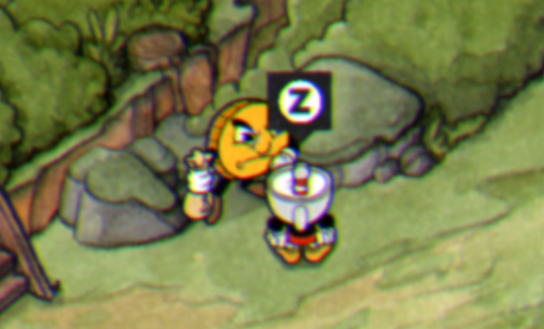
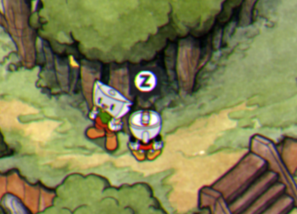
Aqui temos uma moeda e outro personagem na primeira ilha, onde devemos entrar num diálogo com a moeda primeiro e logo depois ganharemos uma recompensa
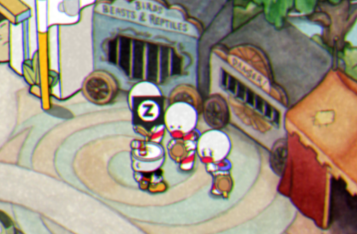
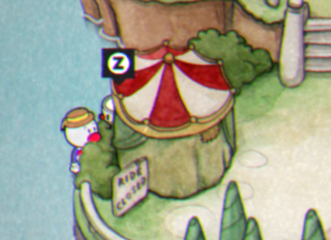
Neste detalhe, temos um diálogo com algumas luminárias de barbearia que são um grupo musical, onde eles dizem ter perdido um dos integrantes. Explorando o mapa, encontramos esse tal integrantes atrás de uma barraca de circo, levamos ele de voltao ao grupo e eles nos cantam uma música muito legal
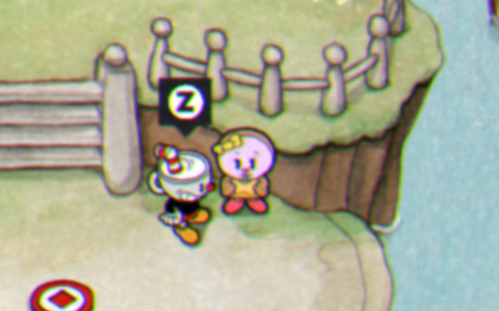
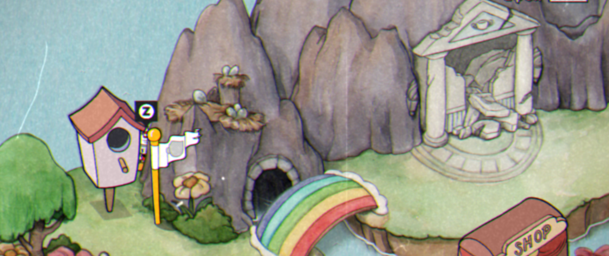
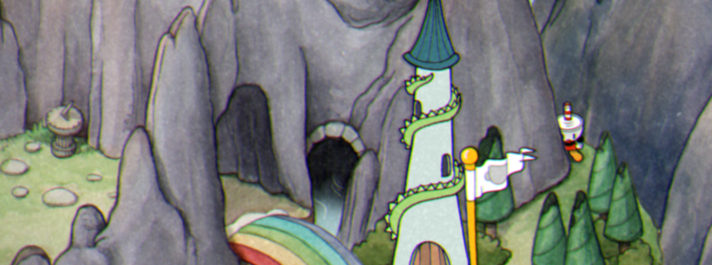
No segredo acima, a personagem nos pede para atravessarmos um local secreto em troca de uma moeda, podemos completar isso achando uma passagem secreta atrás da montanha e passando por todo o caminho até o outro lado
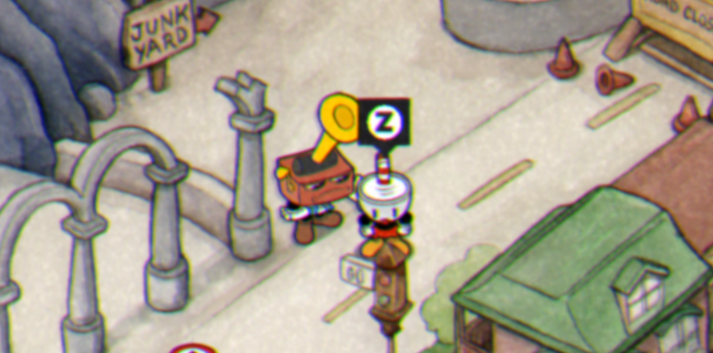
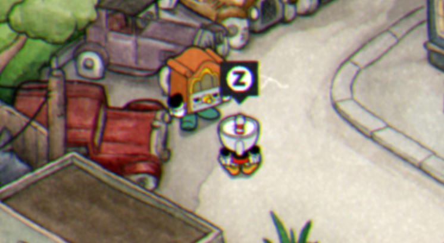
Um diálogo longo entre esses dois personagens em que um deles acaba alterando o som do jogo para uma melodia mais vintage, e isso se torna configurável na parte de áudio do jogo
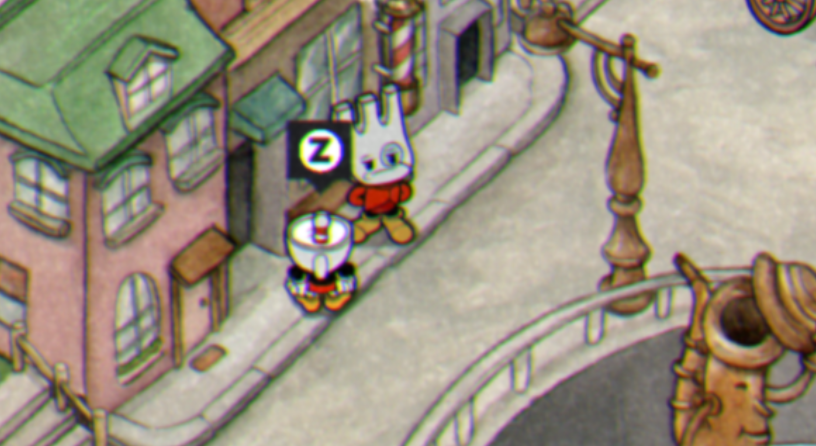
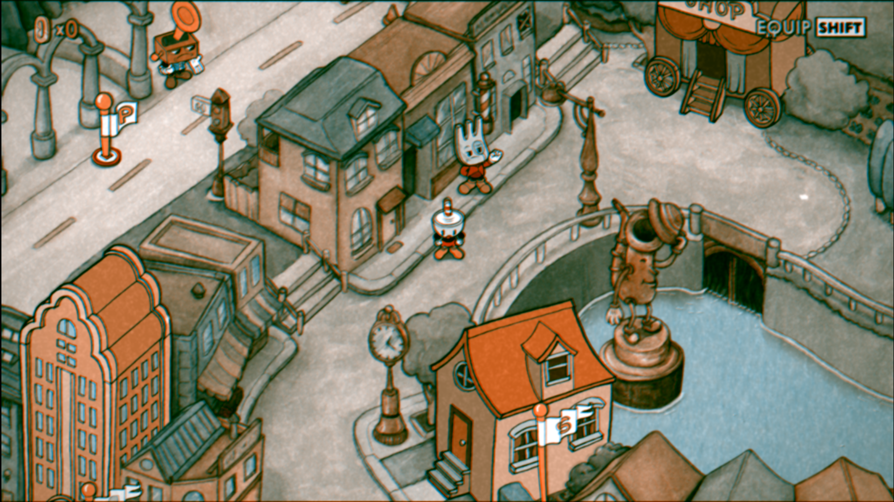
Aqui temos dois segredos incríveis, através de um diálogo com esses personagens, ganhamos a opção de alterar a parte visual do jogo, aumentando a saturação no exemplo acima, e deixando preto e branco no explo abaixo:
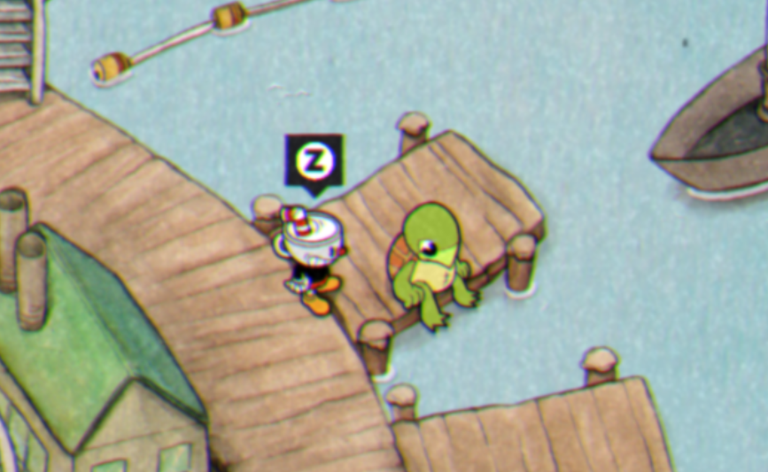
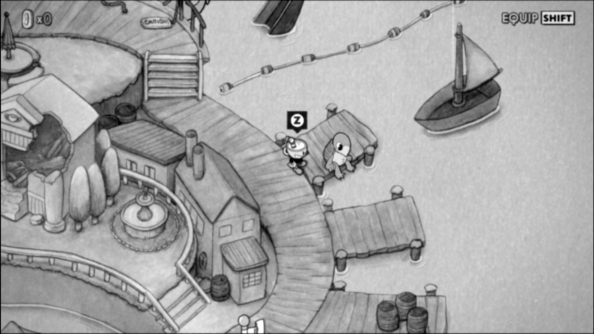